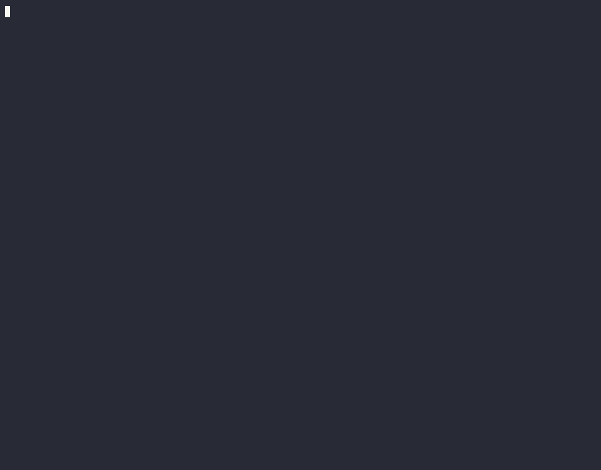

Merge Demo

A branch is an independent line of development. Developers create branches to isolate work and avoid impacting the stable production branch (main/master).
MAIN BRANCH
C1 ----- C2 ----- C3
|
|
v
FEATURE BRANCH
C4 ----- C5
Development Happens Here
Back to Top
git branch feature-login git switch feature-login git add . git commit -m "Login Feature" git switch main git merge feature-loginBack to Top
| Command | Purpose |
|---|---|
| git branch | List all branches |
| git branch feature | Create branch |
| git checkout feature | Switch branch |
| git switch feature | Modern switch command |
| git checkout -b feature | Create and switch |
| git switch -c feature | Create and switch (modern) |
| git branch -d feature | Delete branch |
Main Branch
C1 ----- C2 ----- C3
\
\
C4 ----- C5
Feature Branch
git merge feature
C1 ----- C2 ----- C3 ----- C4 ----- C5
Merge Demo

Teams collaborate through GitHub using feature branches and Pull Requests.
Developer
|
|
Create Feature Branch
|
|
git push origin feature
|
v
GitHub Repository
|
|
Pull Request
|
|
Code Review
|
v
Merge Into Main
Back to Top
git clone REPOSITORY_URL git checkout -b feature-payment git add . git commit -m "Payment Module" git push origin feature-paymentBack to Top
Rebase replays commits from one branch on top of another branch. It creates a cleaner, linear commit history.
Before Rebase
Main
C1 ----- C2 ----- C3 ----- C4
\
\
C5 ----- C6
Feature
git rebase main
After Rebase
C1 ----- C2 ----- C3 ----- C4 ----- C5 ----- C6
Rebase Demo
git switch main git pull origin main git switch feature git rebase mainBack to Top
Feature Branch C1 → C2 → C3 → C4 → C5 git merge feature Main Branch C1 → C2 → C3 → C4 → C5Back to Top
| Category | Command | Purpose |
|---|---|---|
| Branch | git branch feature | Create branch |
| Switch | git switch feature | Switch branch |
| Create+Switch | git switch -c feature | Create and switch |
| Merge | git merge feature | Merge branch |
| Push | git push origin feature | Push feature branch |
| Rebase | git rebase main | Replay commits on main |
| Delete | git branch -d feature | Delete branch |
| Inspect | git log | View history |
Use this workflow to develop a feature locally and integrate it into your main codebase.
git initgit add . and git commit -m "[message]".git branch feature-logingit checkout feature-logingit checkout mastergit merge feature-loginUse this workflow when collaborating on remote repositories like GitHub.
git clone https://github.com/user/repo.gitgit push origin feature-loginmain.Use Rebase to maintain a clean, linear project history.
master.git rebase master.| Category | Command | Syntax & Usage |
|---|---|---|
| Branch Creation | git branch | git branch [branch_name] → Creates a new branch. |
| Switching | git checkout | git checkout [branch_name] → Switches to branch. |
| Switching (New) | git switch | git switch [branch_name] → Modern alternative. |
| Create & Switch | git checkout -b | git checkout -b [branch_name] → Creates and switches. |
| Listing | git branch | git branch → Lists all local branches. |
| Merging | git merge | git merge [branch_name] → Merges into current branch. |
| Rebasing | git rebase | git rebase [base_branch] → Re-applies commits. |
| Remote Push | git push | git push origin [branch_name] → Pushes branch to remote. |
| Deletion | git branch -d | git branch -d [branch_name] → Deletes branch locally. |
| Force Delete | git branch -D | git branch -D [branch_name] → Force deletes branch. |